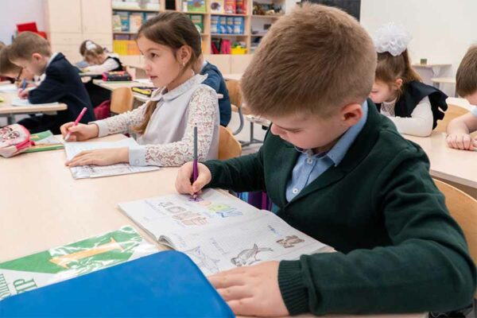
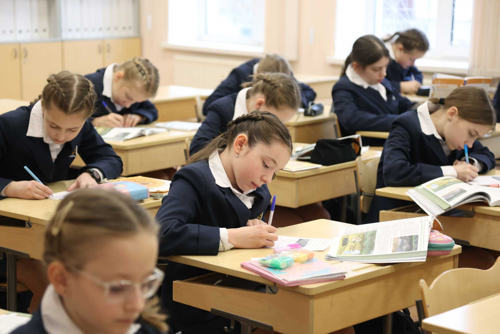
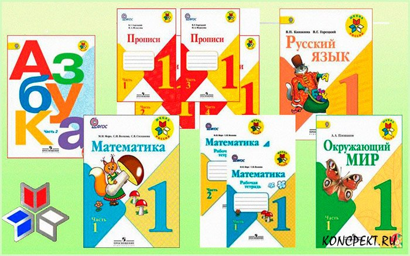

«Школа России»
Материалы и особенности программы
Программа построена на достижениях традиционной русской педагогики и уделяет большое внимание патриотическому воспитанию учащихся. Материалы УМК призваны сформировать у школьников преданность Отечеству и малой Родине, интерес к родному языку и культуре, а также уважительное отношение к национальным ценностям всех народов России. Помимо этого, УМК ориентирован на развитие у детей качеств, соответствующих понятиям о человечности: доброты, эмпатии и отзывчивости.

Приоритет программы — духовно-нравственное развитие, воспитание личности гражданина России. В учебниках много материалов о морали, нравственности, доброте, общечеловеческих ценностях. Система учебников программы «Школа России» отличается тем, что ориентирована на развитие у учащихся универсальных учебных действий (УУД), формирующих основу умения учиться и обеспечивающих активное включение детей в учебный процесс по всем школьным предметам.

«Школа России» — это современный вариант классической школьной программы, по которой учились большинство советских и российских детей. Она подходит всем, кто хочет дать своему ребёнку традиционное школьное образование. УМК рассчитан на детей с любым уровнем подготовки к школе: занятия в первом классе начинаются с обучения счёту и чтению «с нуля».
Благодаря тому, что «Школа России» — наиболее распространённая в нашей стране учебная программа, она подойдёт детям, вынужденным часто переезжать: в каждом городе России есть школы, работающие по УМК. Так как у программы «Школа России» наибольшая распространенность в школах, то эта программа встречается чаще всего в школах нашего города.